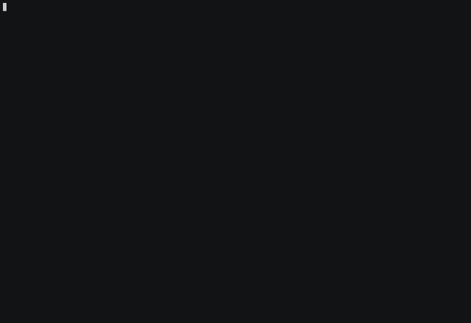

Automatic Formatting
To format all code, use Treefmt.
Usage
Formatting a file:
treefmt <file_to_check>
Formatting all files at once:
treefmt
IDE Integration
VS Code
To use treefmt from within VS Code install the treefmt-vscode plugin.
And configure the plugin by adding the following lines into the .vscode/settings.json file:
"editor.defaultFormatter": "ibecker.treefmt-vscode",
"editor.formatOnSave": true
Vim Builtin Format Operator gq
You may use vim’s builtin format operator gq (see :help gq in case you don’t know it) b
pointing its formatprg option to clang-format, i.e.:
"" Make sure to have 'filetype' activated, e.g.
filetype plugin indent on
"" set formatexpr and formatprg when filetype is cpp
au FileType cpp setlocal formatexpr= formatprg=clang-format\ -style=file
This (of course) assumes clang-format being in your $PATH. You can now apply the formatting e.g. by hitting gq on your selected text:

Copyright Header Check
All source files must contain an Apache-2.0 copyright header with SPDX identifier.
The cr_checker.py tool verifies and automatically applies copyright headers.
Checking files
To check all files for correct copyright headers:
python3 tools/cr_checker/cr_checker.py \
-t tools/cr_checker/templates.ini \
-c tools/cr_checker/config.json \
--exclusion-file tools/cr_checker/exclusions.txt \
.
The tool exits with code 1 if any files are missing or have incorrect headers.
Fixing files automatically
To automatically add or replace copyright headers:
python3 tools/cr_checker/cr_checker.py \
-t tools/cr_checker/templates.ini \
-c tools/cr_checker/config.json \
--exclusion-file tools/cr_checker/exclusions.txt \
--fix .
When --fix is used:
Files with an old-format copyright header (e.g.
// Copyright 2024 Accenture.) will have the year and author extracted and used in the new Apache-2.0 header.Files without any copyright header will get a new header using the default author from
config.json.
Configuration
tools/cr_checker/templates.ini— Copyright header templates per file typetools/cr_checker/config.json— Default author ({"author": "Accenture"})tools/cr_checker/exclusions.txt— Files and directories to exclude (entries ending with/exclude directories)
The copyright check is also enforced in CI via .github/workflows/copyright.yml.
Treefmt Integration
The copyright checker is integrated into treefmt.
Running treefmt will automatically fix copyright headers alongside code formatting:
treefmt
Include Guard
Use #pragma once at the top of every header file.
See Include Guard for the required format.